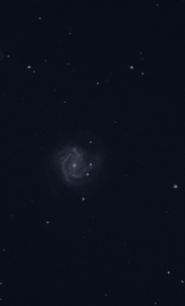

Статьи

3 минут читать
Вспышка сверхновой звезды
Астрономы наблюдали рекордную сверхновую звезду
Ученые представили результаты более двух лет наблюдений за сверхновой SN2016aps — рекордно долгой и крупной: масса этой звезды могла достигать 100 масс Солнца.22 февраля 2016 года был зафиксирован взрыв далекой сверхновой SN2016aps, которая, по оценкам астрономов, вспыхнула ярче, чем вся наша Галактика. Процесс продолжался более 1000 дней, выбросив рекордные количества энергии, так что SN2016aps можно по праву назвать самой мощной сверхновой за всю историю наблюдений.
Британский астрофизик Мэтт Найкол (Matt Nicholl) и его коллеги обнаружили, что усиление свечения SN2016aps было зафиксировано еще раньше, в декабре 2015 года, и его можно увидеть в данных, собранных во время обзора Intermediate Palomar Transient Factory.
Ученые продолжали наблюдения за сверхновой более двух лет, пока она излучала в видимом и ультрафиолетовом диапазонах — удивительно долгий для сверхновых срок. Результаты этой работы опубликованы в свежем номере журнала Nature Astronomy.Исходя из спектра звезды, взорвалась она в глубине плотного газового облака. Частицы, с которыми сталкивалось разлетающееся вещество, замедлили его и раскалились, создав такую яркую и длинную вспышку: практически вся кинетическая энергия взрыва перешла в термическую. Такая особенность характеризует сверхновые типа IIn, однако даже на фоне этих крупных объектов SN2016aps выделяется своими циклопическими размерами.
©Aaron Geller»
По расчетам ученых, взрыв произвел более 1052 эрг энергии и выбросил в общей сложности от 50 до 100 масс Солнца — это в 5-10 раз больше средней сверхновой. Поэтому Найкол и его соавторы относят SN2016aps к парно-нестабильным сверхновым — настолько массивным, что после их взрыва не остается ни нейтронной звезды, ни черной дыры. Вещество погибшей звезды, превратившись в железо, полностью рассеивается по окружающему пространству.
Такие объекты описаны в основном теоретически. В наблюдениях они остаются крайне редкими, и до сих пор известны лишь несколько кандидатов в парно-нестабильные сверхновые. Теперь их стало на одного — и весьма крупного — кандидата больше.